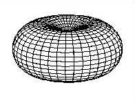
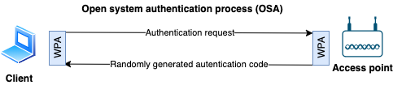

Wireless networks overview
- Wireless network = Wi-Fi
- Type of Wireless Local Area Network (WLAN)
- Standardized by IEEE 802.11
- Allows devices in range of an access point to access the network.
Wireless terms
- Access Point
- Access Point (AP) or Wireless Access Point (WAP)
- Hardware device that allows wireless connectivity to the end devices.
- SSID (Service Set Identifier)
- Unique name for a wireless Access Point
- Inserted into the header of every data packet.
- BSSID (Basic Service Set Identifier)
- MAC address of an access point
- GSM
- Global System for Mobile Communication
- Bandwidth
- Amount of information that may be broadcasted over a connection
- Hotspot
- Places where wireless network is available for public use
- Orthogonal Frequency Division Multiplexing
- Encoding method of digital data on multiple carrier frequencies
- Frequency-hopping spread spectrum (FHSS)
- Method of transmitting radio signals rapidly switching a carrier among many frequency channels
- Phase Shift Keying (PSK)
- Modulation technique where phase of carrier signal changed by varying the sine and cosine inputs.
- Widely used for WLANs, biometric and contactless operations, along with RFID and Bluetooth communications.
Antenna patterns

- Directional antenna patterns
- Directional antenna
- Also known as unidirectional antenna
- Broadcasts and obtains radio waves from a single direction (can be e.g. 30 - 60 degrees)
- E.g. Yagi (also known as YagiUda antenna)
- Most concentrated, higher range
- Parabolic grid antenna
- Based on the idea of a satellite dish
- Can be attacked from farther away as it picks up Wi-Fi signal from 16 km and more
- Bi-directional antenna
- Omni-directional antenna
- Broadcasts in 360 degrees
- Most common type of antenna used in wireless communications and networks, especially WiFi
- Used also in wireless base stations
- Least concentrated and lower range
- 
- Dipole: Used for closer proximity e.g. mobile phones, client connections instead of site-to-site
Wireless encryption
Wireless encryption comparisons
WEP
- Wired Equivalent Privacy
- 1997, to provide data confidentiality
- Stream cipher RC4 for confidentiality
- CRC-32 checksum for integrity
- Authentication usingWEP-Open and WEP-Shared (using a shared key) modes
- Weak as it reuses small IVs which allows decoding of its shared key.
WPA
- Wi-Fi Protected Access
- 2003, replace WEPs weak encryption
- Uses Temporal Key Integrity Protocol (TKIP)
- Major improvement over WEP
- Dynamically changes key as system is used
- Combined with larger IV, this defeats well known attacks
- Uses RC4 encryption
- Authentication usingWPA-PSK and WPA-Enterprise modes
- WPA-PSK uses pre-shared (symmetric) key to encrypt the wireless data
- Improved payload integrity vs. WEP
- Uses more secure message integrity check (MIC) known as Michael
- Includes a frame counter to prevent replay attacks
- Still subject to attack
WPA2
- Also known as Wi-Fi Protected Access 2 or 802.11i
- 2004, replace WPAs weak cipher
- Authentication WPA2-Personal and WPA2-Enterprise modes
- Uses Advanced Encryption Standard algorithm (AES)
- Much harder to decrypt than WPA or WEP
- Replaces TKIP with CCMP (AES-CCMP)
- Also known as Counter Mode Cipher Block Chaining Message Authentication Code Protocol (Counter Mode CBC-MAC Protocol) or CCM mode Protocol (CCMP)
- Uses AES as encryption algorithm instead of RC4 in WPA.
WPA3
- Wi-Fi Protected Access 3
- 2018, introduce Dragonfly handshake, protects against dictionary attacks
- Authentication usingWPA3-Personal and WPA3-Enterprise
Wireless cryptographic differences
| WEP | WPA | WPA2 | WPA3 | |
|---|---|---|---|---|
| Encryption | RC4 | RC4 + TKIP | AES-CCMP | AES-CCMP & AES-GCMP |
| IV Size (Bits) | 24 | 48 | 48 | 48 |
| Key Length (Bits) | 40/140 | 128 | 128 | 128/256 |
| Integrity Check | CRC-32 | Michael/CRC-32 | CBC-MAC, CCMP | BIP-GMAC-256 |
WPA2 and WPA3 Operation Modes
Personal
- Intended for home use, easier setup
Enterprise
- More complex setup, more granular control
- Uses RADIUS authentication with Extensible Authentication Protocol (EAP) extensions for more security
WPA2 vs WPA3 operation modes
| Personal | Enterprise | |
|---|---|---|
| WPA2 | Also called WPA-PSK (pre-shared key) as it uses PSK to protect network access | Same encryption |
| WPA3 | Also called WPA3-SAE (Simultaneous Authentication of Equals). Uses 128-bit key and Forward Secrecy against dictionary attacks. | Uses 192-bit key |
Wireless standards
- 802.15.1 - Bluetooth
- Read more on bluetooth
- 802.15.4 - Zigbee
- Low-power, low-data-rate, and close-proximity wireless ad hoc networks.
- Popular IoT connection protocol
- 802.16 - WiMAX
- Wireless on "steroids"
- Written for global development of broadband wireless metropolitan area networks.
- Big range and fast.
-
Comparing wireless standards
-
802.11 Specifications
| Standard | Distance | Speed | | -------- | ----- | -----| | WiFi | Medium (20-250 m) | Started slow (2 Mbit/s) but fast now (1300 Mbit/s) | |ZigBee | Smallest (1-100 m) |Slow (up to 0.25 Mbit/s) | | WiMax | Biggest (1.6 - 9.6 km) | Fast (up to 1 Gbit/s) |
- Summary of the standards
| Standard | Year | Summary |
|---|---|---|
| 802.11 (WLAN/Wi-Fi) | 1997 | 2.4 GHz DSS, FHSS Up to 2 Mbit/s 20 - 100 meters |
| 802.11a (Wi-Fi 2) | 1999 | 5 - 3.7 GHz OFDM Up to 54 Mbit/s 35 - 100 meters |
| 802.11b | 1999 | 5.4 GHz DSSS Up to 11 Mbit/s 35 - 140 meters |
| 802.11c | 2001 | Bridge operation procedures; included in the IEEE 802.1D standard |
| 802.11d | 2001 | International (country-to-country) roaming extensions |
| 802.11e | 2005 | Enhancements: QoS, including packet bursting |
| 802.11f | 2003 | Inter-Access Point Protocol, Withdrawn February 2006 |
| 802.11g (Wi-Fi 3) | 2003 | 2.4 GHz OFDM Up to 54 Mbit/s 38 - 140 meters |
| 802.11i | 2004 | Defines WPA/WPA2 encryption standards |
| 802.11n (Wi-Fi 4) | 2009 | 2.4 - 5 GHz MIMO-OFDM Up to 600 Mbit/s 70 - 250 meters |
| 802.11ac (Wi-Fi 5) | 2012 | 5 GHz MU-MIMO, Up to 1300 Mbit/s 70 - 250 meters |
| 802.11ax (Wi-Fi 6) | 2019 | 1 - 6 GHz MU-MIMO, OFDMA Up to 11 Gbit/s 70 - 250 meters |
| 802.15.1 (WPAN/Bluetooth) | 2002 | 2.4 GHz GFSK, /4-DPSK, 8DPSK Up to 50 Mbit/s 70 - 250 meters |
| 802.15.4 (Low rate WPAN/ZigBee) | 2003 | 0.868, 0.915, 2.4 GHz O-QPSK, GFSK, BPSK Up to 0.25 Mbit/s 70 - 250 meters |
| 802.16 (WiMAX) | 2005 | 2-11 GHz SOFDMA Up to 1 Gbit/s 1.6 - 9.6 kilometers |
- See also all 802.11 standards and amendments
Wi-Fi authentication
Wireless authentication modes
Open system authentication process (OSA)
- Uses WPA protocol.
- Complete free for all, no auth at all
- 
Shared key authentication process (SKA)
- Uses WEP protocol + a shared secret key

IEEE 802.1x
- Authentication mechanism for both wireless and physical access to a network
- Authenticate devices to decide to give e.g. corporate or guest access
- Switches uses back-end authentication server, see AAA
- Can authenticate based on MAC address or other requirements (certificate, VLAN etc.)
- Per default all hosts on a wired connection (LAN) can see each other